~30 min🍸
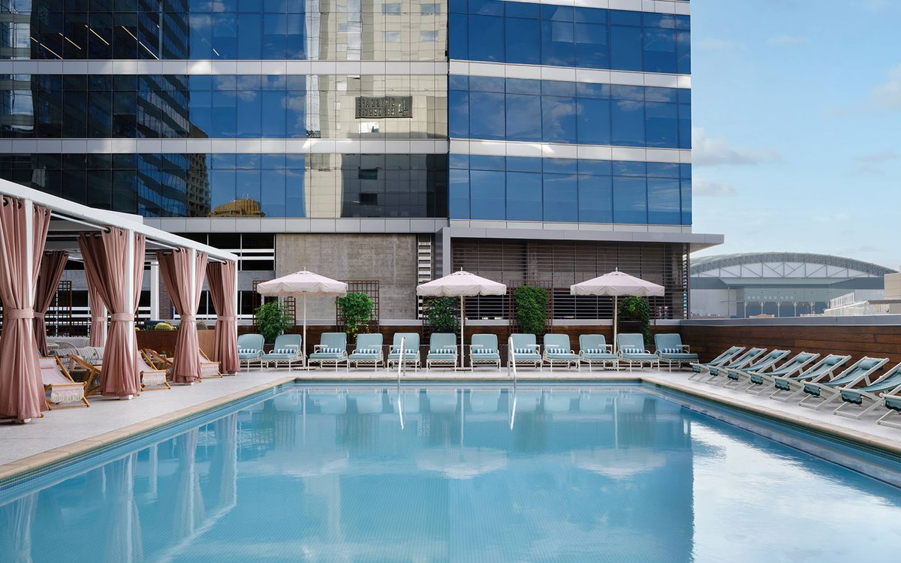
Eden at Kimpton Palomar
Third-floor pool deck with private cabanas and a long view of South Mountain and the skyline. The polished one. Botanical cocktails, day-to-night.
Downtown PhoenixVisit →
Close to home for a weeknight, downtown when it's worth the freeway. Every spot here is real, with a link to plan the night.
Downtown stacks its best views on the roof. Sunset over South Mountain, a pool, a cocktail. Go for golden hour.

Third-floor pool deck with private cabanas and a long view of South Mountain and the skyline. The polished one. Botanical cocktails, day-to-night.
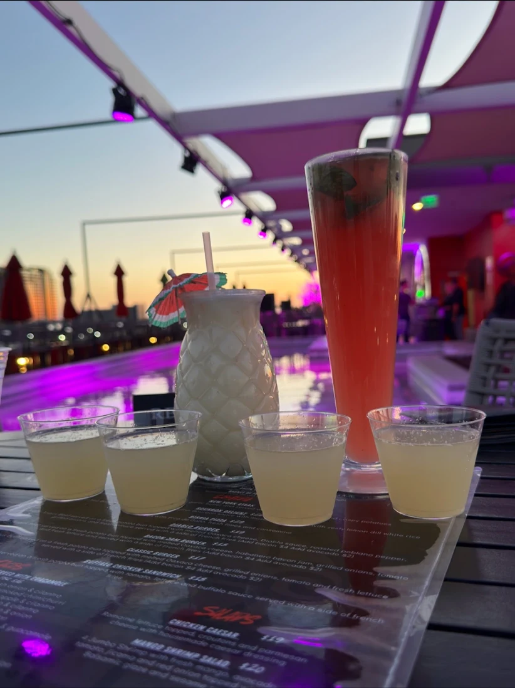
On top of the Cambria downtown. Loungers, a rooftop pool, and a clean shot of the city skyline. Trendier, younger crowd.
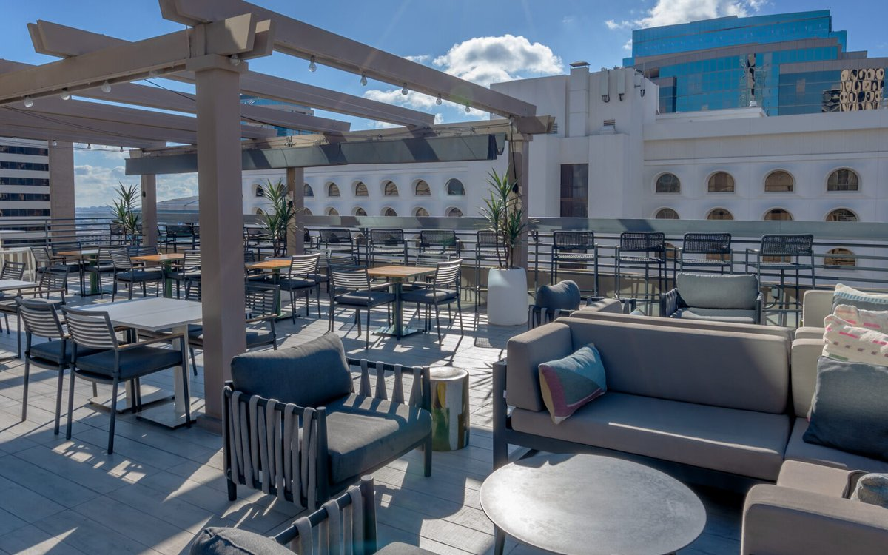
Atop the Hilton Garden Inn in downtown Phoenix. A wide sundeck and a clean line on the skyline. Drinks up high, no fuss.
Two lists. The West Valley spots are weeknight-close. The Phoenix ones are James Beard caliber and worth the drive.
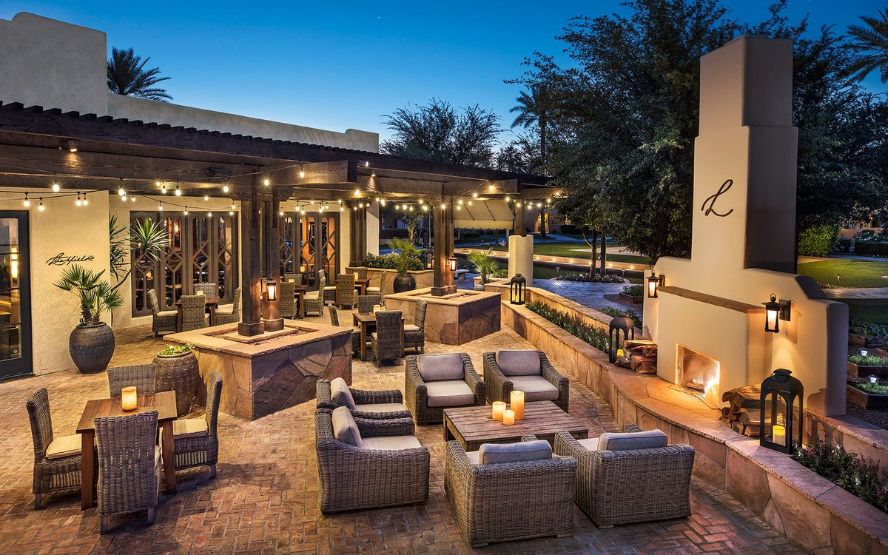
Farm-to-table at the historic Wigwam resort in Litchfield Park. The dress-up dinner, ten minutes away. Closed for a renovation, reopening Fall 2026, right after we land.
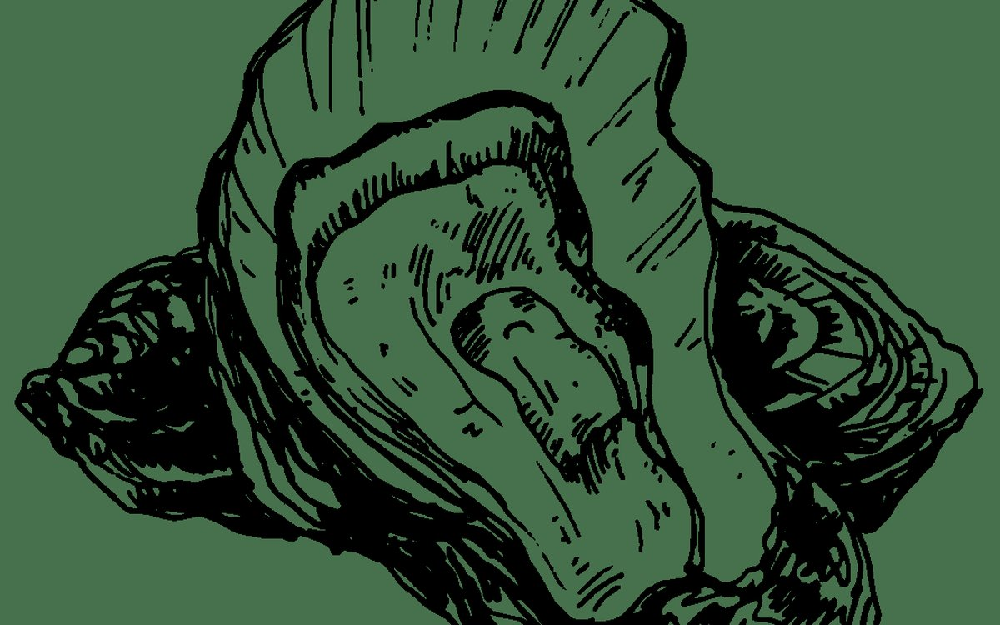
Steam-kettle seafood and fresh sushi in Goodyear, craft cocktails alongside. The reliable date night right in town.
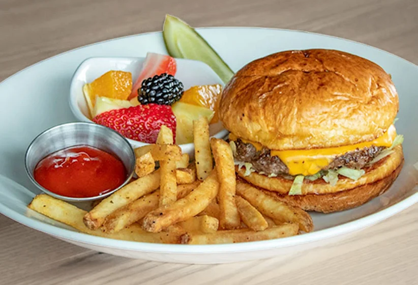
Winery and restaurant in Avondale. Bison steak, a working wine list, and a tasting room. Easy to land a big group here.
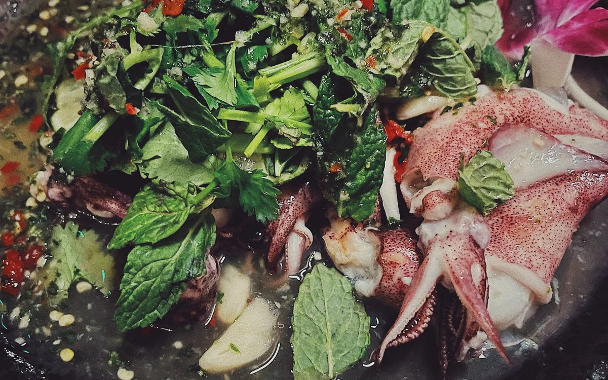
2025 James Beard Best Chef Southwest. Regional Thai downtown, the city's most decorated kitchen right now. Book ahead.
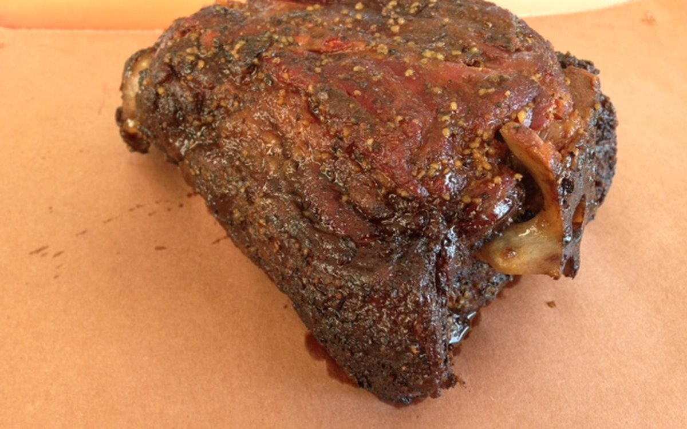
Central-Texas brisket that draws a line before it opens. James Beard semifinalist. Go early, they sell out.
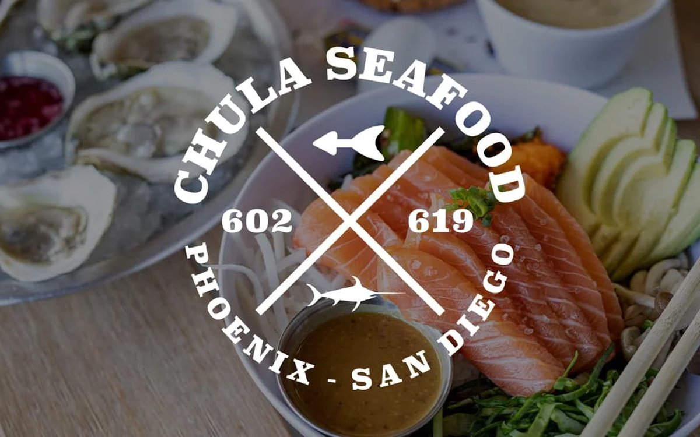
Sustainable seafood, flown in and counter-fresh. James Beard semifinalist. The poke and the daily catch are the move.
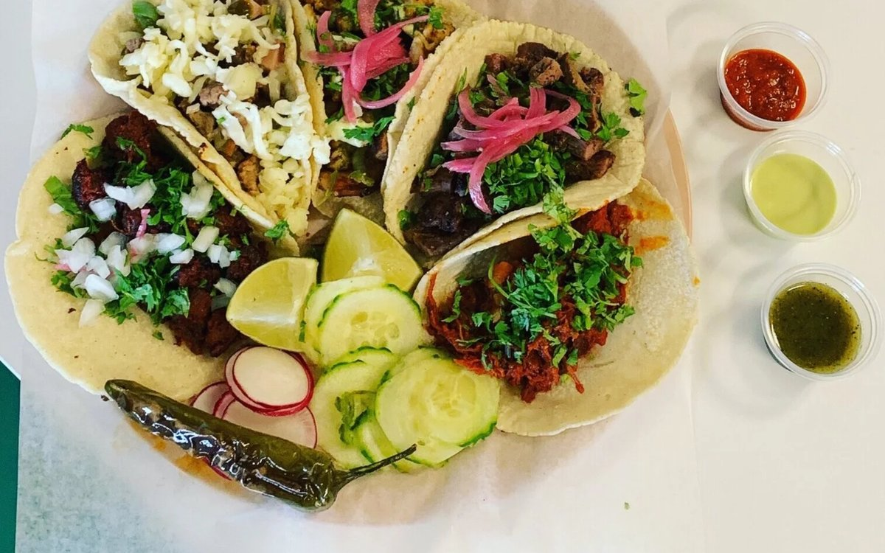
Chihuahua-style tacos and gorditas from a James Beard semifinalist couple. Unfussy, packed, exactly right.
Weekend mornings before the heat. Produce, food trucks, makers, coffee. Start local, then work toward downtown.
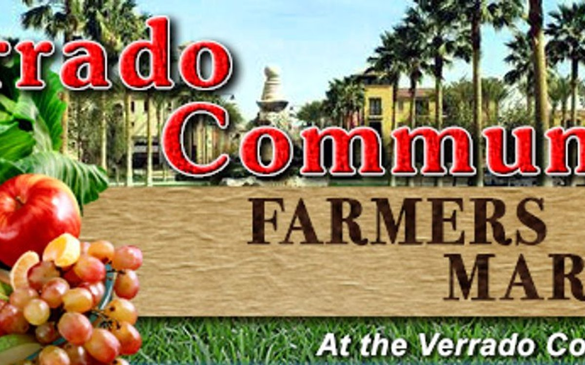
The closest one, in Buckeye's Main Street district. Small, friendly, Sunday mornings. The neighborhood warm-up.
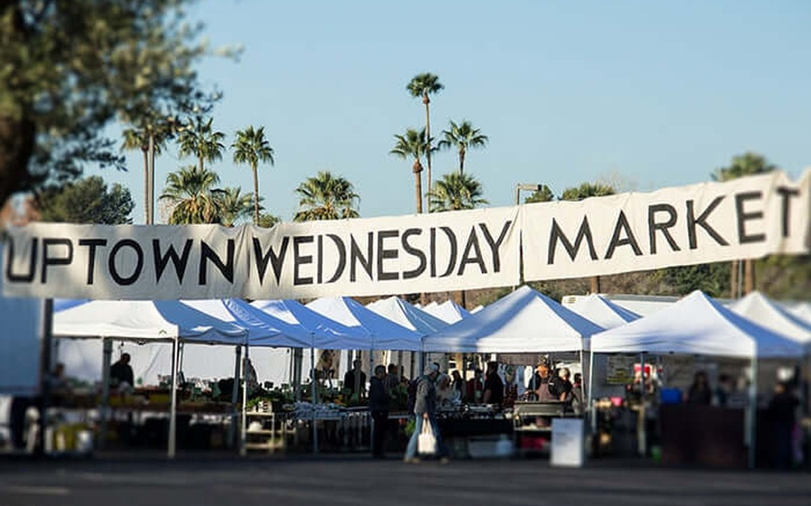
Central & Bethany Home. Wednesday and Saturday mornings, year-round, big vendor lineup and real shade. The serious one.
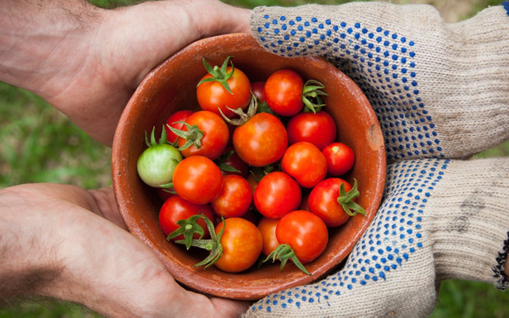
90+ growers and makers, live music every Saturday, year-round. Now at the Arizona Center, 455 N 3rd St. The biggest spread in the Valley.
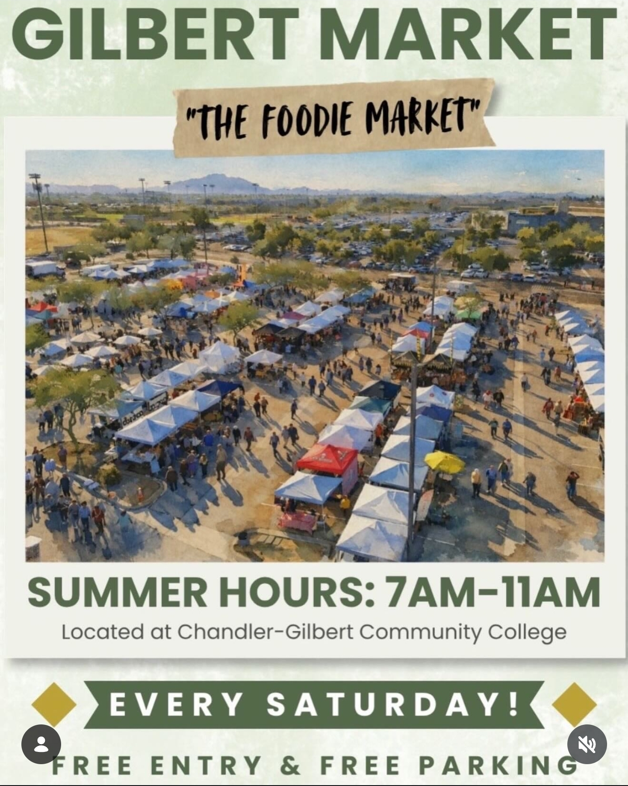
Saturdays near the Gilbert water tower. 60+ vendors, heavy on food trucks. Relocated in late 2025, so check the current spot first. Worth the East Valley drive once in a while.
One roof, a dozen kitchens, no one fighting over where to eat. Good for the nights everyone wants something different.
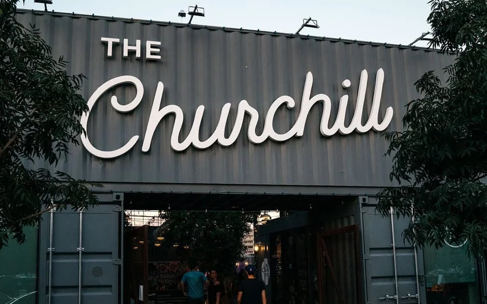
A downtown courtyard built from shipping containers: bars, coffee, and a handful of local kitchens around shared tables. The hangout.
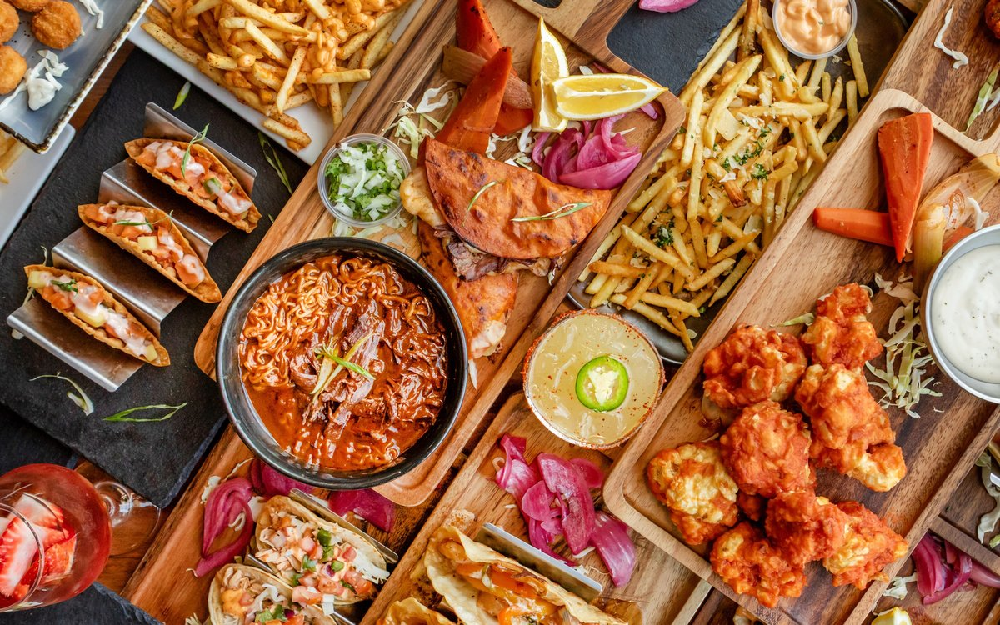
Multiple kitchens and a 42-tap beer wall under one roof: tapas, sushi, wings, tacos, pizza, gelato. Built for a crowd that can't agree. Call ahead, hours have been shifting.